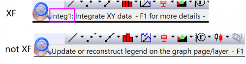

FAQ-344 Wie füge ich in Origin Schnellzugriffstasten hinzu?
Add-Accelerators
Letztes Update: 24.07.2023
Das Hinzufügen einer Schnellzugriffstaste oder Tastenkürzel bietet einen schnellen Zugriff auf menügeführte Operationen. Abgesehen von mit dem Menü verbundenen Shortcuts können Sie Ihre eigenen Tastenkombinationen für jeden Befehl im Origin-Menü mit Hilfe von X-Funktionen definieren.
Die einfachste Möglichkeit besteht darin, die Maus über das Menü, für das Sie einen Shortcut hinzufügen wollen, zu bewegen, und den Text unten links in der Statusleiste zu prüfen. Wenn der Text mit dem Namen der X-Funktion beginnt, ist es ein Menü, das mit Hilfe einer X-Funktion erzeugt wurde. Ansonsten ist es das nicht.
Beispielsweise öffnen die beiden Befehle Integrieren (Analyse: Mathematik: Integrieren) und Legende aktualisieren (Rechtsklick auf Legendenobjekt > im Kontextmenü Legende: Legende aktualisieren ...) den Dialog X-Funktion. Integrieren wurde mit Hilfe der X-Funktion erzeugt, Legende aktualisieren aber nicht.

- Öffnen Sie die Datei origin.ini, die sich in Ihrem Anwenderdateiordner befindet. Sie können Notepad verwenden, um die Datei zu öffnen.
- Suchen Sie den Abschnitt [WorksheetAccelerators], [GraphAccelerators] etc. Einige Zugriffstasten wurden hier bereits definiert, zum Beispiel der Dialog NLFit (Strg+Y). Ergänzen Sie diese Abschnitte, um Zugriffstasten für den Fenstertyp zu definieren.
Unterstützung zum Definieren Ihrer eigenen Schnellzugriffstasten finden Sie in den kommentierten Notizen im Abschnitt [WorkSheetAccelerators] dieser .ini.- Der Ausdruck beginnt mit der Folgenummer der Schnellzugriffstaste. Die Reihenfolge in der INI ist nicht wichtig, aber es kann keine Lücken geben, d.h., wenn Sie 1,2,3,4 und 5 definiert haben und dann 4 löschen, wird 5 ignoriert.
- Als Nächstes setzen Sie ein Gleichheitszeichen.
- Der Code rechts vom Gleichheitszeichen schließt zwei primäre Teile ein (plus mögliche Optionen, siehe nächsten Punkt). Das Erste ist der Funktionsname, den Sie am einfachsten erhalten, indem Sie auf die Strg-Taste drücken, während Sie auf den Befehl des Dialogmenüs auswählen (sehen Sie sich das Feld "X-Funktion" im aufgerufenen Dialog an). Das Zweite ist die Tastenkombination, die Sie verwenden werden, um die Funktion zu steuern. Sie sollten eine vertikale Linie verwenden, um die Teile voneinander zu trennen.
- Sowohl Versatz (Offset) als auch nOption sind optional. nOption muss jedoch präsent sein, falls der Versatz festgelegt wird.
- Der Versatz verknüpft ein bestimmtes Dialogdesign mit der Zugriffstaste. Es handelt sich um einen null-basierten Versatz: ein Versatz von "2" verbindet die Schnellzugriffstaste mit dem dritten Design in der Liste (<Zuletzt verwendet> ist im Allgemeinen das erste Design in der Liste). Das Setzen eines "+"-Zeichens vor den Versatz erzwingt das Öffnen des Dialogs genauso wie das Festlegen des Versatzes = 14.
- Das Festlegen von nOption = -1 bedeutet, dass der Argumentwert nicht verwendet wird (d. h., die Schnellzugriffstaste wird nicht mit einem bestimmten Design verbunden).
- Speichern Sie Origin.ini erneut und schließen und starten Sie Origin neu, um Ihre Änderungen zu sehen.
- Navigieren Sie zu \Anwenderdateien und öffnen Sie die Datei Origin.ini. Suchen Sie dann den Abschnitt [WorkSheetAccelerators].
- Um den FFT-Dialog zu öffnen, der normalerweise über das Menü Analyse: Signalverarbeitung: FFT: FFT geöffnet wird, fügen Sie Folgendes hinzu:
3=fft1|Ctrl+B
- Speichern Sie die Datei origin.ini erneut und schließen und starten Sie Origin neu.
- Öffnen Sie das Menü Analyse: Signalverarbeitung: FFT: FFT. Sie sollten die Abfolge der Tastaturkürzel rechts vom Menüeintrag sehen.
 | Das Definieren von Schnellzugriffstasten in \Anwenderdateien\Origin.ini überschreibt die Standardzugriffstasten (mit einigen Ausnahmen, Strg+Y ist z. B. hartkodiert, um FitNL zu öffnen). Wenn Sie z.B. subtract_ref|Ctrl+X definiert haben, können Sie Strg+X nicht mehr als Tastaturkürzel für Bearbeiten: Ausschneiden verwenden. Wenn Sie subtract_ref|Ctrl+Shift+X definiert haben, können Sie Strg+Shift+X nicht mehr in einem Matrixfenster verwenden für Ansicht: X/Y zeigen.
|
Schlüsselwörter:Schnellzugriffstaste, Menü, X-Funktion, Tastatur, Tastenkombination, Kürzel